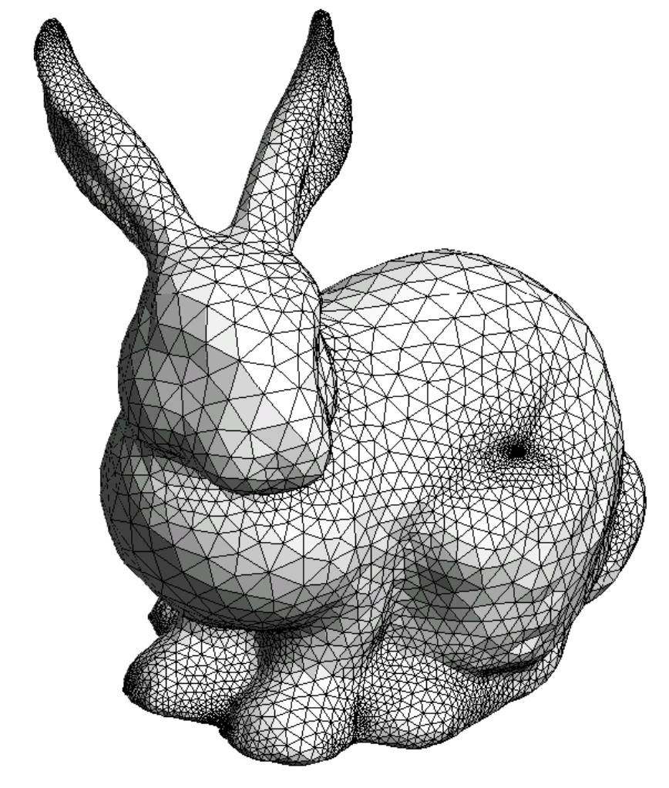
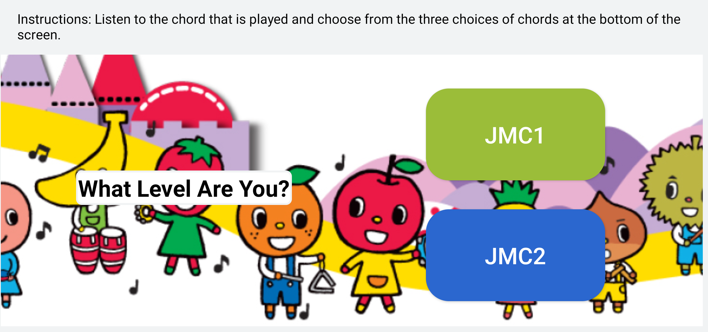
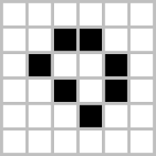
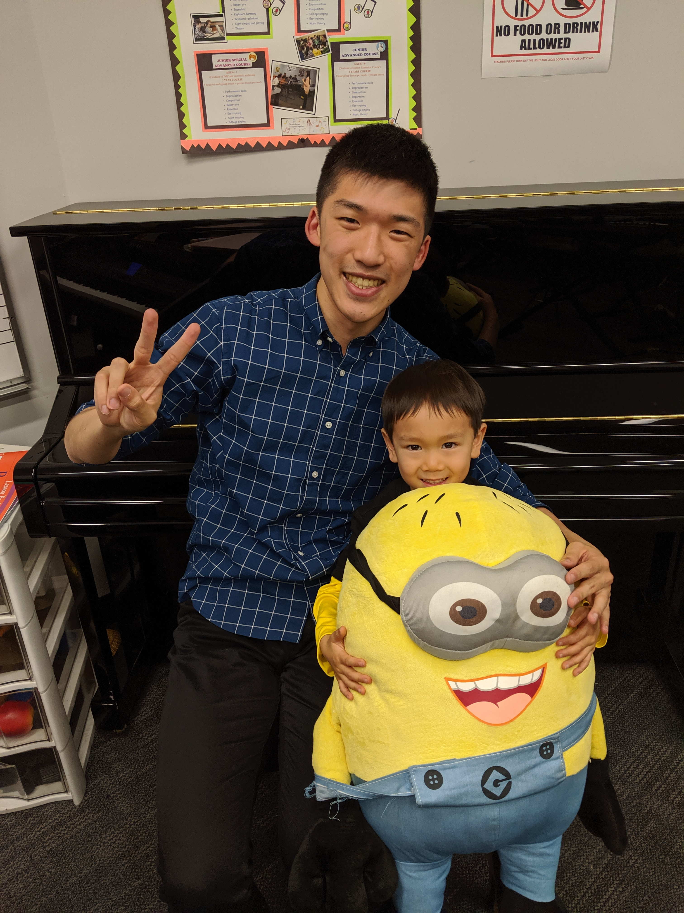
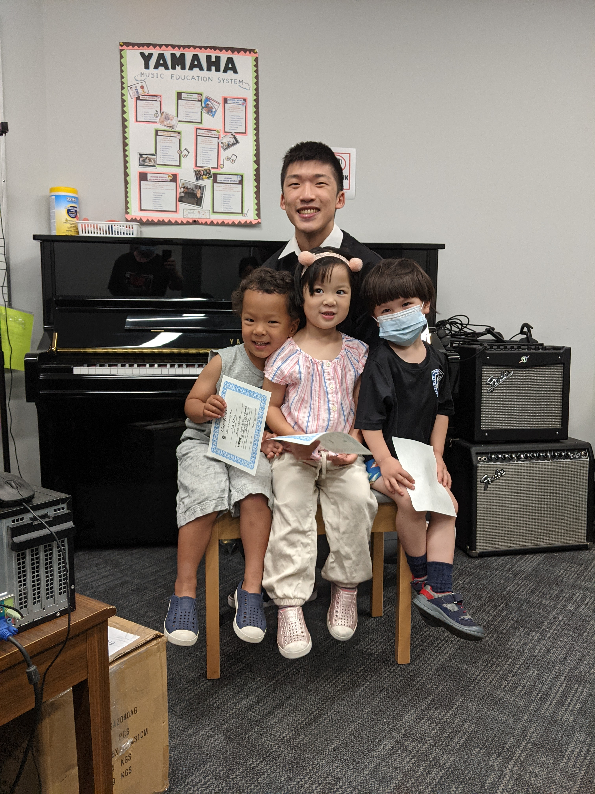
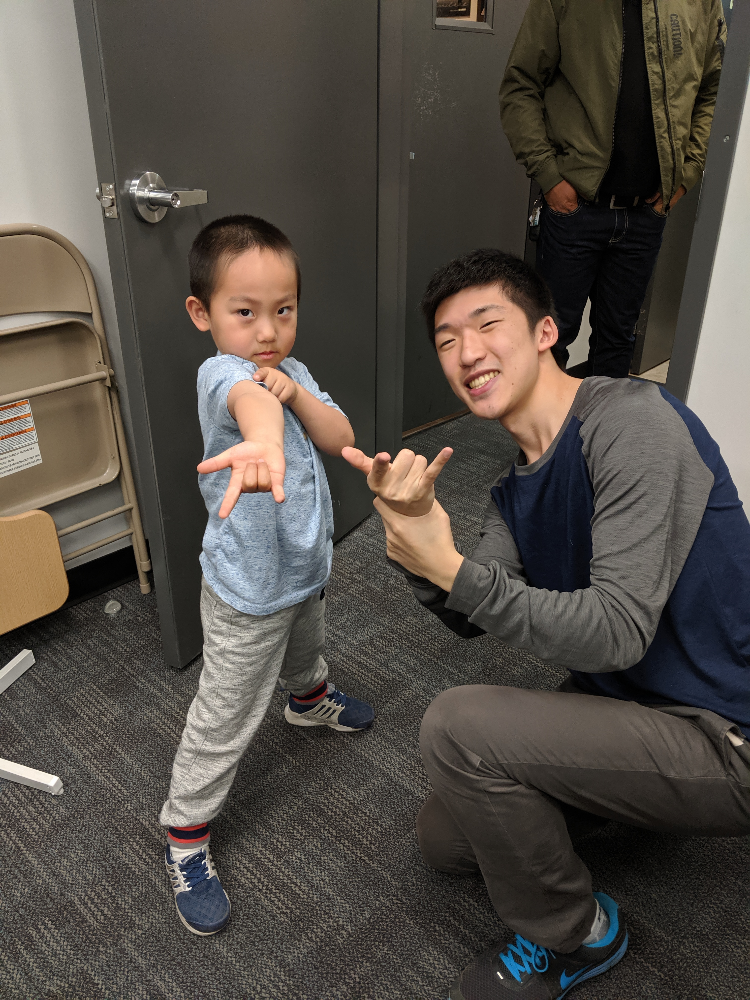
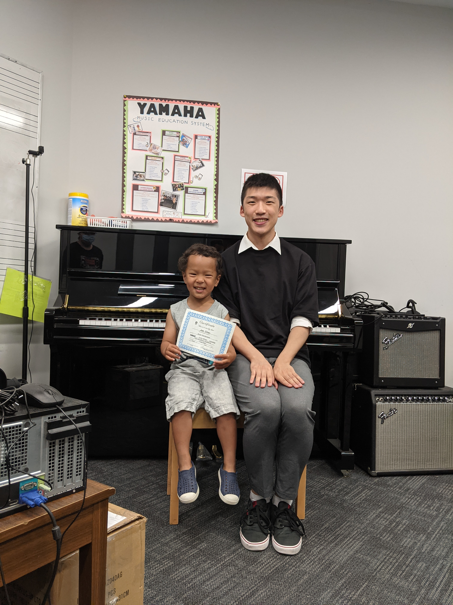
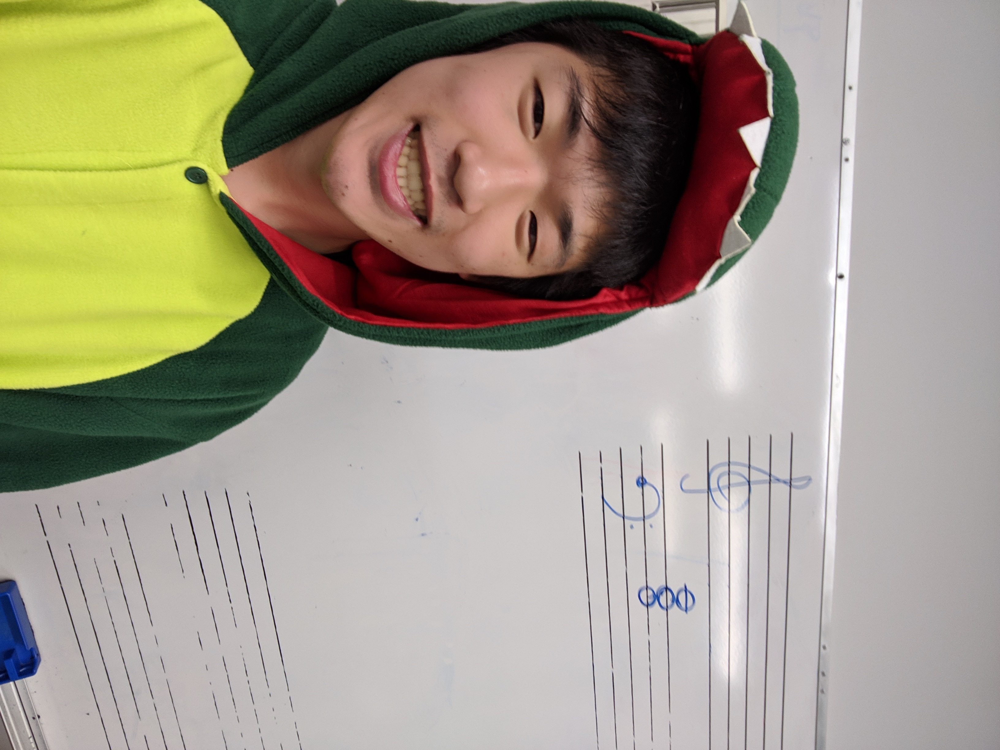
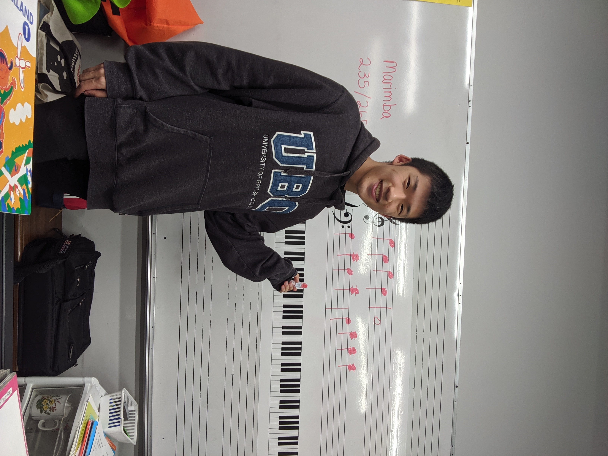

Thanks for taking the time to get to know me! My name is Benjamin, but I also go by Ben and my friends call me
Bang (cuz Ben + Chang = Bang!). I am a computer science student in the BCS program at the University of British
Columbia (Vancouver). I was originally pre-med, totally set on going to medical school and becoming a doctor but
because of how much I enjoyed a single computer science elective I took in my final year, I totally changed course and decided to
pursue CS instead.
The girl in the photo is one of my music students. Fun fact about me is that on the weekends, I teach group music
classes to children. It is known around the world as the Yamaha Music Program and it offers multiple classes at
various levels to give children a well-rounded education in music. I started as an instructor when I was in high
school and have been teaching for almost 10 years now and every year has been better than the last. Read more about my teaching
here.
My Work
These are some examples of the computing related work I have done in my spare time and throughout the school year. I have tried
to include a variety to show the diversity of my skills and interests but also the motivations behind the work I pursue.
CPSC 203 (UBC)

One of the works I'm most proud of is actually not a personal project/ hackathon/etc. but actually a course I've helped create at
UBC. Assisting instructor Cinda Heeren, I helped develop course content for her programming course CPSC 203: Programming, Problem Solving
and Algorithms. In this class we teach CS fundamentals but mix in some fun topics here and there: basic data structures, data science using
Pandas dataframes, graph traversing algorithms, NLP on novels and much more! I have personally created all the lab content for the course as well
as a majority of the text/exam questions. In 2021 the course was officially added into UBC's data science minor program!
Perfect Pitch

My very first personal project and one I still keep up to date with, Perfect Pitch is a music game app I created for my music students during
the pandemic. I was finding it difficult to facilitate the same active learning environment with online teaching and wanted to create something
that my students could use at home in order to reinforce our classroom activities. The app is a audio-based chord guessing game for Android which
I programmed in Kotlin. It is available on the Google Play store and I am still making adjustments to it based on feedback from parents.
Conway's Game of Life

What originally started as a class assignment became something I decided to take further and challenge my skills in Python as much as possible.
I have created varying starting boards to initiate some infamous animations: the bullet, the glider, the ship, etc. but I have also created a
variant of the Game of Life in order to model a disease outbreak.
Teaching
1 / 6

2 / 6

3 / 6

4 / 6

5 / 6

6 / 6

The Yamaha Music program offers classes to children starting as early as 2 years old. Having taught for several years now, I actually specialize
in the early-age classes, inspiring/motivating and getting kids interested and enjoying music. We do all kinds of activities from singing songs,
dancing to music, playing on the keyboard and music theory activties. The entire purpose of the program is for children to develop their vocals,
learn to play the piano, develop their musical senses but most importantly: learn to enjoy music!
Below is an example of one of my class activites, this is an older class who are in their third year with me. We are singing a upbeat cheerful song
while dancing with actions I choreographed. Please enjoy: